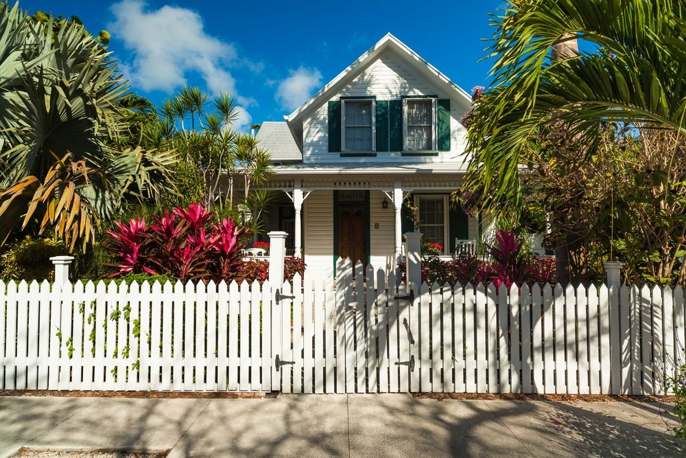

In This Guide
- A DIY wood fence budget has far more lines than lumber: posts, concrete, hardware, finish, tools, hauling, disposal, and your own time.
- Wood type is the biggest swing in material cost, with pressure-treated pine at the low end and cedar or redwood higher.
- Doing the work yourself saves labor charges, but rentals, extra boards, and rework can eat into that savings.
- Post work, property lines, and buried utilities punish mistakes the most, so plan those parts first.
Most people pricing a DIY wood fence start and stop with the lumber. That is one line in the budget. Posts, concrete, hardware, finish, tools, hauling, and your own time all belong on the list, and the total looks very different once every piece is written down.
This guide from Big Easy Fence follows the money on a wood fence: what each part costs, what you really save by doing the work yourself, and where a DIY job ends up costing more than a crew would have charged. It covers costs and trade-offs only. It is not a construction manual, and it skips the risky steps on purpose.
What Goes Into a DIY Wood Fence Budget
Fence pricing looks simple until you break it into parts. Each part has its own price and its own way of running over. A line-by-line budget also makes it easy to compare against a contractor quote later. Use the table as a checklist, and fill in current prices from the lumber yard or home center near you.
| Cost Category | What Drives It | How to Estimate |
|---|---|---|
| Posts and Concrete | Fence length, post spacing, post size, and how much concrete each hole takes | Count posts along the run, add corners, ends, and gates, then multiply by the local price per post |
| Rails and Boards | Fence height, style, and the wood you pick | Measure the total run in feet, then price boards for your style at your supplier |
| Hardware and Fasteners | Outdoor-rated screws or nails, brackets, hinges, and latches | Ask the supplier which fasteners suit your lumber, then price by the box |
| Gates | Width, style, and hardware weight | Price each gate as its own line, since gates cost more per foot than fence panels |
| Finish | Stain, sealer, or paint, plus brushes or a sprayer | Check the coverage listed on the can, and plan for recoating down the road |
| Tools and Rentals | What you already own and what you would have to rent or buy | List every tool the job needs, then mark the ones you would rent by the day |
How Wood Type Moves the Total
Wood choice is the largest single swing in materials cost, and it also changes what you spend on upkeep later. Here is how the common options line up on price.
Pressure-Treated Pine
Treated pine is usually the lowest-priced wood at the yard, and it is the standard fence wood in south Louisiana. It needs sealing or staining to slow weathering, so plan for that cost from the start.
Cedar
Cedar costs more per board. In return it resists rot and insects naturally and looks good with a clear or lightly tinted finish. Whether the extra price pays off depends on how long you plan to keep the fence.
Cypress and Redwood
Cypress grows in Louisiana and resists rot well, though supply and grade vary. Redwood grows on the West Coast, so expect a higher price and fewer local options.

Height and style matter almost as much as species. A taller fence uses more lumber and puts more load on every post. A privacy style uses more boards per foot than a picket style, and decorative extras such as lattice tops or post caps add up across a long run.
Costs People Forget to Count
Materials get all the attention, so the smaller items are what blow a budget. Add these before you commit.
- Delivery and hauling. Lumber for a full yard is bulky. Delivery fees or a truck rental belong in the total.
- Extra boards. Order more than the measurements call for, because some pieces get cut short or arrive warped.
- Removal of an old fence. Tearing out and hauling away an existing fence takes time, and dump fees can apply.
- Surveys and permits. Some properties need a survey to confirm the line, and some areas require a permit before work starts.
- Helpers. Friends and family who lend a hand may expect a meal or a favor in return.
- Your time. A fence is a big job for a first-timer. Weekends spent on it are weekends you are not doing something else.
Height limits, setbacks, and permit rules differ by neighborhood, and many subdivisions have their own fence rules. Confirm them with your local permitting office and your HOA first, because rebuilding a fence costs far more than asking.
DIY vs Hiring a Contractor: Where the Trade-Offs Sit
The honest comparison is not DIY cost against contractor price. It is your materials, tools, and time against a crew that arrives with equipment and experience.
What You Really Save
The clear savings are labor charges. You also choose your own materials and can buy in stages if cash is tight. For a short, straight, flat run with a simple style, that savings can be real.
What Eats Into the Savings
Tool rentals, hauling, and extra lumber take a bite. So does the learning curve. A first fence usually takes longer than planned, and a crooked run or a bad cut means buying materials twice.
Jobs Worth Handing to a Crew
Some parts of a fence punish mistakes. Posts carry the whole structure, and in soft, wet Louisiana soil with storm winds in the forecast, a badly set post is the first thing to fail. Sloped yards, long gate spans, and any digging near buried lines are also better left to people who do this every week. Before anyone digs, the national call-before-you-dig service, reached by dialing 811, should mark buried utilities.
Is DIY Worth It for Your Fence?
Build the table above with real local prices, add the forgotten costs, and put a dollar value on your time. If the total still comes in well under a written quote, DIY may make sense for a short, simple fence. If the numbers are close, or if the yard is sloped, wet, or long, the crew option often wins on hassle alone.
If you want to see the same math from a contractor's side, our guide to how a fence is estimated walks through it. And if you would rather have a price in hand before you decide, our residential fencing team can give you a free estimate to set beside your own.
Common Questions
Is It Cheaper to Build Your Own Wood Fence?
How Do You Estimate a Wood Fence Job?
What Is the Cheapest Fence to Build?
Want a Real Number to Compare With Your DIY Budget?
Send us your fence length, height, and style, and we will price it out so you can set it next to your own line-by-line budget.